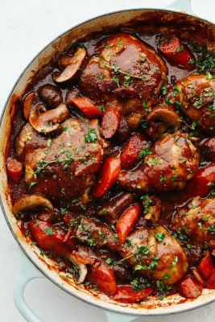

Coq au Vine

Coq au Vine
A classic French stew.
Onions, bacon, mushrooms and red wine enrich this food
with delicious flavors.
Ingredients (serves for 6):
- 6 bone-in, skin-on chicken thigs
- 1 pinch of salt and black pepper
- 8 ounces of bacon sliced into ½-inch pieces
- 10 large white or brown mushrooms sliced to thick slices
- ½ large yellow onion, diced
- 2 shallots, sliced
- 1 tbs butter
- 1 tbs flour
- 1½ cups red wine
- 6 sprigs fresh thyme
- 1 cup chicken broth
Steps:
- Preheat oven to 190 degrees
- Season chicken thigs all over with salt and black pepper
- Cook bacon in a large, oven-proof skillet, on a medium heat,
until evenly browned.
Transfer onto a paper-towel lined plate, leaving drippings
in the skillet
- Increase heat to high and cook chicken until browned, 2-4 min. per side
Transfer chickens onto a plate, leaving drippings in the skillet
- Lower heat to medium; saute mushrooms, onion and shallots with a pinch of salt
untill golden and caramelized
- Stir butter and flour into the mix, about 1 min.
- Pour red wine into the skillet and bring to a boil while scraping browned bits
off of the bottom of the pan with a wooden spoon.
Stir bacon and thyme in; simmer until wine is about 1/3 reduced.
Pour chicken broth into the mix and set chicken thigs into skillet;
bring wine and stock to a simmer
- Cook chicken in the pre-heated oven for 30 min.
Spoon pan juices over chicken and continnue cooking until no longer pink
at the bone and the juices run clear, about 30 min. more
Transfer chicken to a platter, keep warm
- Place skillet over high heat, until sauce thickens slightly
Season with salt and pepper; discard thyme. Pour over chicken.
Back to recipes